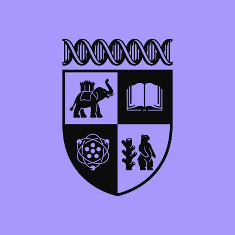
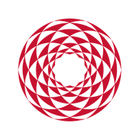
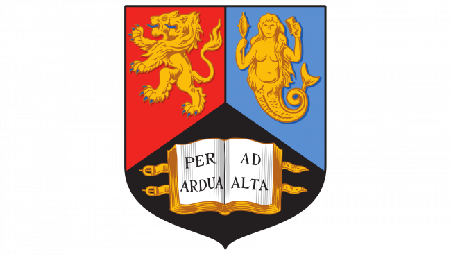
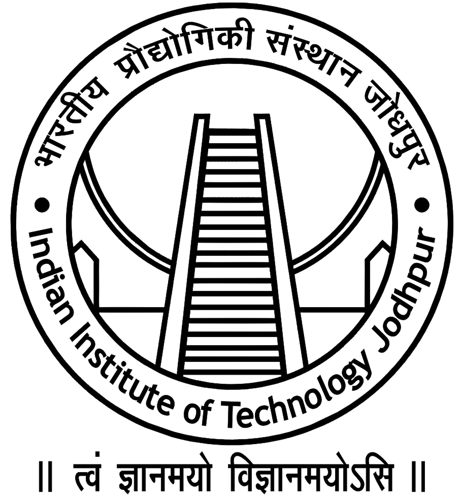

Doctoral Researcher
University of Warwick
Jan 2026 - Present 
- PhD Student with the Predictive Systems in Biomedicine (PRISM) Lab at the Tissue Image Analytics (TIA) Centre.

Doctoral Researcher
University of Warwick
Jan 2026 - Present

Visiting Researcher - Machine Learning (Object Detection)
Neuroethology Laboratory
May 2024 - Jan 2026 

Research Assistant - Generative AI
University of Birmingham
Nov 2024 - Mar 2025
Research Assistant - Generative AI
Ashoka University
Jan 2024 - May 2024
Teaching Assistant
Ashoka University
Jan 2024 - May 2024

Teaching Assistant
IIT Jodhpur, Rajasthan
Jun 2023 - Sep 2023
Teaching Assistant
Ashoka University
Jan 2023 - May 2023
Teaching Assistant
Ashoka University
Sep 2022 - Dec 2022
Teaching Assistant
Ashoka University
Jan 2022 - May 2022
Doctor of Philosophy (PhD), Computer Science
University of Warwick
Jan 2026 - Jan 2030
Master of Science (MS), Artificial Intelligence and Machine Learning
University of Birmingham
Jul 2024 - Sep 2025
Postgraduate Degree, Computer Science
Ashoka University
May 2023 - May 2024
Bachelor's Degree, Computer Science
Ashoka University
Sep 2020 - May 2023